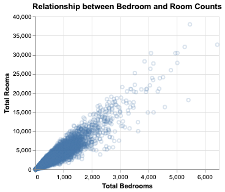
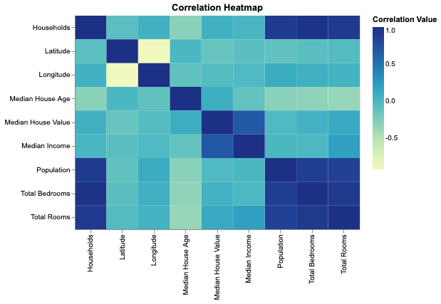
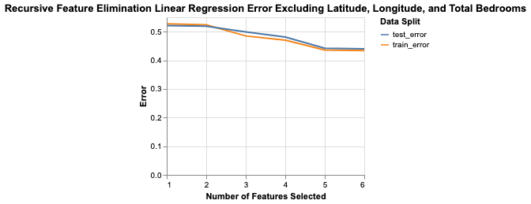
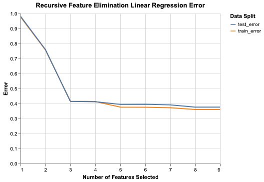
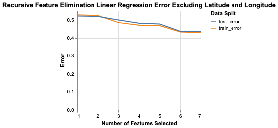
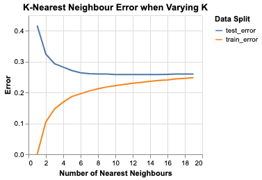
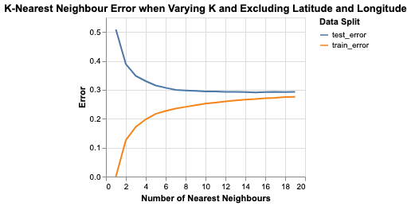

import pandas as pd
Author: DSCI 522 Group 312
Date: January 25, 2020
This analysis focuses on predicting the median house prices in census blocks given independent variable about the location, home characteristics, and the demographics of the census block. This dataset was sourced from Kaggle, and many other people have completed similar analyses.
Our goal is to build a model that will predict median house value with a higher model validation score than the 0.60 achieved by Eric Chen, the author of The California House Price Kaggle page from which the dataset was obtained.
We aim to bring additional insight to the existing models including looking at multicollinearity and trying KNN with a variety of different values for n_neighbors.
This dataset is a modified version of The California Housing Dataset, with additional columns added by Aurélien Geron. This dataset contains information about median California house values per census block as sourced from the 1990 US Census.
We used Linear Regression, K-Nearest Neighbour Trees, and a Random Forest Regressor to predict the median house value given the independent variables.
The Exploratory Data Analysis focused on identifying linear relationships between the independent variables and the dependent variable as well as looking at correlations between independent variables. Previous analyses of this dataset highlighted that linear regression was an appropriate prediction method for the median housing value, but generally, they lacked insight into multicollinearity (the correlation and linear relationships between independent variables). Of all of the variables examined, the Variance Inflation Factor (VIF) was higher than 1, which means that there is strong evidence of multicollinearity.
pd.read_csv('eda_charts/vif_table.csv')
The variable with the highest VIF is total bedrooms, and this appears to be strongly linearly related to the total number of rooms, given that the room count includes the bedrooms.

The following heatmap represents the correlation values of the variables.

A common approach to address multicollinearity is to remove variables with high VIFs. As is common in this case, the Linear Regression model performed best when all (or all but one) of the variables were included. The following illustrates the Recursive Feature Elimination for a Linear Regression Model. The x-axis represents the number of features selected so far.
We additionally ran Recursive Feature Elimination on a Linear Regression model, excluding Latitude and Longitude, since these features are very specific to California. The results follow.
It is clear that Linear Regression performed more favourably on the training and testing data including latitude and longitude. This is somewhat to be expected, as areas with expensive median house values often border other areas with similar socioeconomic groups.
To attempt to address the multicollinearity, we also ran Recursive Feature Elimination excluding longitude, latitude, and total bedrooms, which was the feature that had the highest Variance Inflation Factor.

As expected, the results are very similar to the model that only excluded latitude and longitude because the information from the feature "total_bedrooms" is effectively redundant.
 
We also attempted to fit a K-Nearest Neighbor to our data, and KNN yielded better accuracy than simple linear regression. A Standard Scaler was used to pre-process the data, which likely contributed to the success of KNN. The following demonstrates the relationship between the number of nearest neighbours and the resulting training and testing scores.

As with Linear Regression, we removed Latitude and Longitude in hopes to see the effect it had on KNN in terms of spatial nearest neightbours, and the results are as follows.

From the above, we can infer that having latitude and longitude included did improve the KNN model. With or without these features, the number of nearest neighbours that should be used is approximately 9 in order to avoid overfitting.
The goal of our project is not to predict based on Census data for other states, however the results are still quite effective without latitude and longitude.
Opportunities for improvement of the predictive model include:
In both our linear regression model and K-Nearest Neighbors model, we achieved higher accuracy than Eric Chen's best score, which was with linear regression. Chen did not fit a KNN model, so it is unclear whether this model would have performed better for him. For the purposes of predicting median housing price in California by census block, the linear regression and KNN models are effective at estimating the response.
Balla, Deepanshu. n.d. SPLITTING Data into Training and Test Sets with R. https://www.listendata.com/2015/02/splitting-data-into-training-and-test.html.
de Jonge, Edwin 2018. docopt: Command-Line Interface Specification Language. https://CRAN.R-project.org/package=docopt.
Kuhn, Max. 2020. Caret: Classification and Regression Training. https://CRAN.R-project.org/package=caret.
Lang, Michael 2017. checkmate: Fast Argument Checks for Defensive R Programming. https://journal.r-project.org/archive/2017/RJ-2017-028/index.html.
R Core Team. 2019. R: A Language and Environment for Statistical Computing. Vienna, Austria: R Foundation for Statistical Computing. https://www.R-project.org/.
Wickham, Hadley. 2011. testthat: Get Started with Testing. https://journal.r-project.org/archive/2011-1/RJournal_2011-1_Wickham.pdf.
Wickham, Hadley. 2017. Tidyverse: Easily Install and Load the ’Tidyverse’. https://CRAN.R-project.org/package=tidyverse.
Wickham, Hadley, and Lionel Henry. 2019. Tidyr: Tidy Messy Data. https://CRAN.R-project.org/package=tidyr.
Wickham, Hadley, Jim Hester, and Romain Francois. 2018. Readr: Read Rectangular Text Data. https://CRAN.R-project.org/package=readr.
Fabian Pedregosa, Gaël Varoquaux, Alexandre Gramfort, Vincent Michel, Bertrand Thirion, Olivier Grisel, Mathieu Blondel, Peter Prettenhofer, Ron Weiss, Vincent Dubourg, Jake Vanderplas, Alexandre Passos, David Cournapeau, Matthieu Brucher, Matthieu Perrot, Édouard Duchesnay; 12(Oct):2825−2830, 2011 https://scikit-learn.org/stable/
Bernard J. (2016) Python Data Analysis with pandas. In: Python Recipes Handbook. Apress, Berkeley, CA. https://pandas.pydata.org/
Pedregosa et al., 2011. Scikit-learn: Machine Learning in Python, JMLR 12, pp. 2825-2830. http://jmlr.csail.mit.edu/papers/v12/pedregosa11a.html
Seabold, Skipper, and Josef Perktold, 2010. “statsmodels: Econometric and statistical modeling with python.” Proceedings of the 9th Python in Science Conference. http://conference.scipy.org/proceedings/scipy2010/pdfs/seabold.pdf
VanderPlas, Jacob & Granger, Brian & Heer, Jeffrey & Moritz, Dominik & Wongsuphasawat, Kanit & Lees, Eitan & Timofeev, Ilia & Welsh, Ben & Sievert, Scott. (2018). Altair: Interactive Statistical Visualizations for Python. Journal of Open Source Software. 3. 1057. 10.21105/joss.01057. https://altair-viz.github.io/_sources/index.rst.txt
plightbo, simon.m.stewart, hbchai, jrhuggins, et al. © Copyright 2011. https://selenium.dev/documentation/en/front_matter/copyright_and_attributions/
Oliphant, T. E. (2006). A guide to NumPy (Vol. 1). Trelgol Publishing USA. https://web.mit.edu/dvp/Public/numpybook.pdf